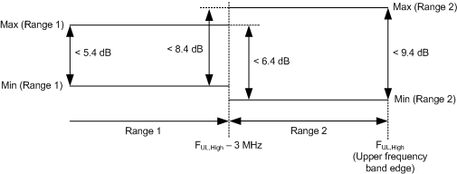
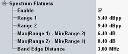

For EVM measurements, an equalization step has to be performed after the FFT. The spectrum flatness of this equalizer has to be verified to validate the EVM results.
For equalizer spectrum flatness measurements, 3GPP divides each frequency band into two ranges. For normal conditions, range 1 contains the subcarriers with at least 3 MHz distance to the band edges. And range 2 contains all subcarriers within 3 MHz distance to the band edges. For extreme conditions, 5 MHz instead of 3 MHz are specified.
The conformance requirements define limits for the maximum power variations within each range and between the ranges. These limits are listed in the table below. The following figure illustrates the limits for normal conditions.

The limits and the band edge distance can be set in the configuration dialog, depending on the modulation scheme.

Characteristics | Refer to 3GPP TS 36.521 V10.3.0, section... | Specified limit, normal / extreme conditions |
|---|---|---|
Spectrum flatness | 6.5.2.4 / E.4.4 EVM equalizer spectrum flatness | max(range 1) - min(range 1) ≤ 5.4 dB / 5.4 dB max(range 2) - min(range 2) ≤ 9.4 dB / 13.4 dB max(range 1) - min(range 2) ≤ 6.4 dB / 7.4 dB max(range 2) - min(range 1) ≤ 8.4 dB / 11.4 dB |